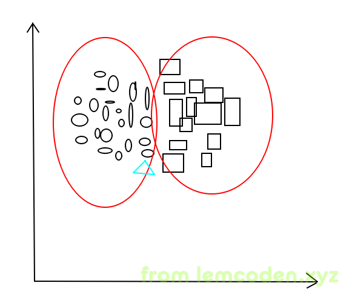
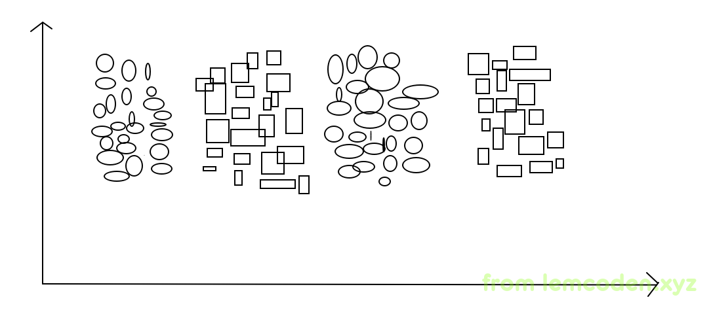
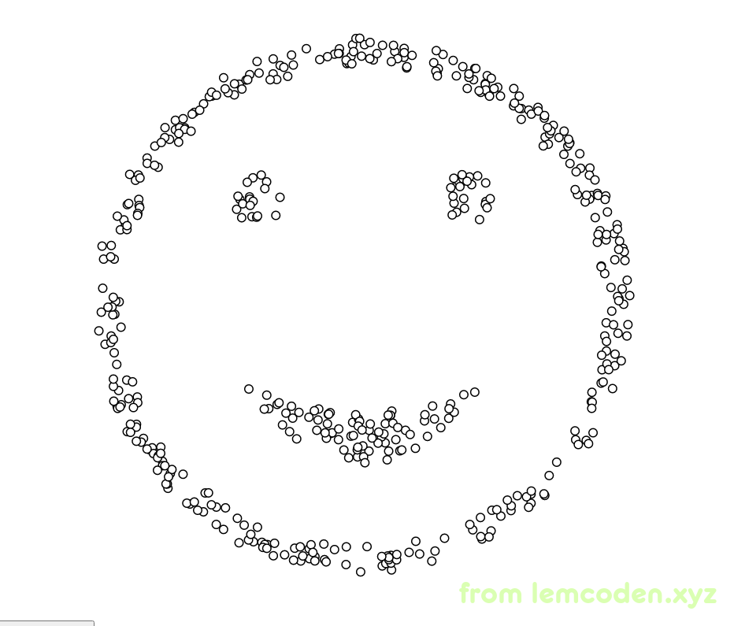
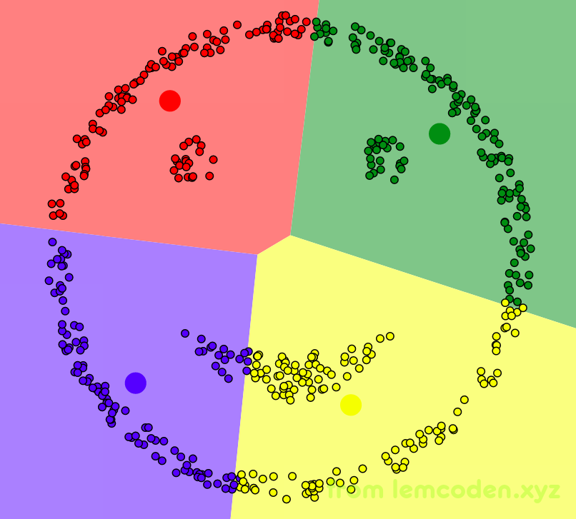
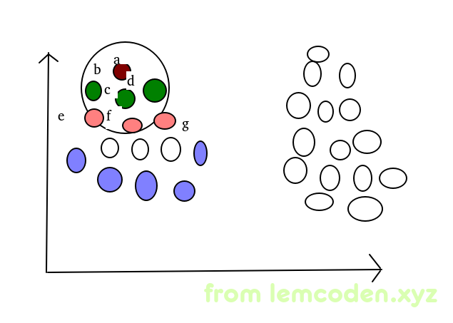

机械学习算法入门04
KNN+K-Means算法
我们之前聊过KNN算法的具体流程,简单的讲就是计算所有点与新进入点的距离,然后取出K个最近距离的点
而KNN算法如果代入实际的计算框架中,每次判断都需要计算与所有点的距离,这个算法的计算量是很巨大的
所以,我们利用"预计算""预分区"类似这样的思想,将数据提前使用K-Means算法分好类,这样我们只需要计算,新进入点在本类当中的所有点的距离就可以了
一般我们是采用T+1,就是提前一天将数据用K-Means算法聚好类,第二天用KNN算法在聚类的基础上计算重新加入的类
这样就大大减小了计算量
但是KNN+K-Means也有一个缺点,我们先看下图

椭圆与矩形是事先用k-means分好的类,而三角形是信息加入的要分类的一条数据,我们会发现,三角形和旁边的矩形距离也很近,但我们的算法不会去计算和矩形之间的距离.这就导致分类结果可能会不准确.
那怎么办呢?
我们可以借鉴决策树 ----> 随机森林 这样的优化方法,提前实现多个k-means聚类结果,然后KNN代入多个聚类中,对比最近距离的结果.
DBScan算法
目前我们好像就学过一个聚类算法,即K-Means算法,那么K-Means算法会存在不可聚类的状况吗?
当然可以,举个例子,比如下图

比如上面这中数据的效果,我们可能就没办法保证聚类效果很好,最多聚成两类,而不是同类这样聚成两类
解决方法也有我们可以先进行一次聚类,再使用逻辑回归进行分类
再举个极端的例子,比如我们的数据像下面这样

数据是一个笑脸,我们直觉上聚类的效果应该是脸的轮廓,两只眼睛,嘴巴聚类为四类,但实际上的效果是这样婶儿的

聚类效果很不理想
但是我们可以用其他的方式,即DBScan算法
DBScan算法,首先需要设置两个参数值,分别是搜索半径R,最小距离minDts
- 首先随机找一个样本,计算空间中所有样本到这个点的距离
- 统计处距离小于R的样本,这些样本都是本类的数据点
- 如果小于R的样本数小于minDts,那么不再一圈内的样本继续扩散
- 如果小于R的样本数大于minDts,圈内的点,在此计算空间中样本到这些点的距离,重复2到4步,直到没有可扩散的点

就像上图一样,随机选择A点为起始点,A点会继续向下扩散,因为BCD再minDts的范围内,所以BCD点会继续扩散到EFG点,其中
A点与B点是直接密度可达
B点到F点是直接密度可达
A点到F点是间接密度可达
而周边的紫色点是扩散边界的点叫做边界点
我们用动画演示一下DBScan的聚类过程

DBScan的优势:
-
不需要指定聚类的个数
-
可以发现任意形状类簇
-
天生能够剔除噪声数据(擅长找到离群数据)抗干扰能力强
劣势:
-
参数很难设置
-
计算复杂度很高